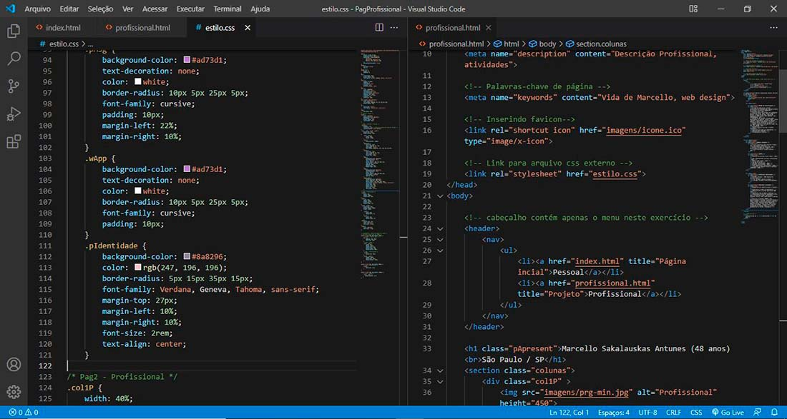

Marcello Sakalauskas Antunes (48 anos)
São Paulo / SP

RESUMO DAS QUALIFICAÇÕES
- 22 anos de experiência, sólidos conhecimentos em implementação e desenvolvimento de sistemas e projetos em MUMPS-MSM e Intersystems Caché (COS).
- Desenvolvimento de Sistemas para atender Escrituração Fiscal, DCTF, Contas a Pagar e Receber, Integração de dados, Obrigações acessórias “SPED FISCAL - EFD ICMS/IPI / EFD CONTRIBUIÇÕES / Nfe”.
- Manutenção de Sistemas: Contabilidade, Recolhimento de Impostos, Contas a Pagar, Contas a Receber, Faturamento, Controle de Estoque, Pedidos de Venda e Atendimento a Clientes.
- Elaboração de relatórios em geral.
- Imposto indireto e contribuições (ICMS, IPI, ISS, PIS, COFINS, INSS).
- Documentação.
- Suporte técnico a usuários e cliente, Treinamento.
- Experiência em redes de computadores.
- Ambiente UNIX (AIX/IBM).
- Procedimentos de Back-up.
FORMAÇÃO ACADÊMICA
- Técnico Informática para Internet, Senac / 2021- em andamento (Matutino)
- Gestão Tecnologia da Informação, UNG – Universidade de Guarulhos / 2008
- Técnico Eletrônica, Colégio Lavoisier. / 1992
CURSOS
- Analista Escrituração Fiscal (Senac / 2022)
- COS – Desenvolvendo com Caché (Intersystems / 2016)
- HTML5 e CSS3 (Senac / 2015)
- Introdução ao SQL
- ZEN Mojo (Intersystems / 2016)
- Ensemble (Intersystems / 2009)
- Caché Adminstrator (Intersystems / 2008)
- Tributação de Impostos Diretos e Indiretos (SENOFISCO / 2006)
EXPERIÊNCIA PROFISSIONAL
- 04/1992 a 07/1996 - Right Track Informática Ltda.
- 09/1998 a 02/2021 - IRKO Organização Contábil Ltda.
- * Até 12/2001 # Suporte Sistemas
- * 01/2002 – 02/2021 # Analista/Programador
PRINCIPAIS ATIVIDADES
- Responsável por suporte técnico a clientes.
- Experiência em redes de computadores.
- Administração em sistema operacional UNIX (AIX).
- Administrar base de dados e back-up.
- Conhecimento em diversos equipamentos entre eles a utilização de RISC, Concentrador, Terminais, Micros, hubs, patch panels e cabling.
- Analista de Sistemas (MUMPS e COS), Desenvolvimento em sistema “financeiro (Contas a Pagar e Receber), controle interno de materiais e requisições”, Desenvolvimento/Manutenção e administração em sistema fiscal, SPED Fiscal, Integração de dados, Leiautes para recepção e transmissão de arquivos (Banco vs Cliente), Documentação de sistema, Treinamento.